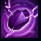
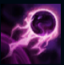
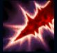
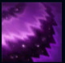
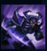

Kassadin
| Kassadin The Void Walker | |
|---|---|
| Release date | 07.08.2009 |
| Class | Assassin, Mage |
| Positions | Middle |
| Resource | Mana |
| Range type | Melee |
| Adaptive type | Magic |
| Base statistics | |||
| Health | 576 – 2361 | Mana | 397.6 – 1876.6 |
| Health regen. | 6 – 14.5 |
Mana regen. | 6 – 19.6 |
| Armor | 19 – 66.6 | Attack damage | 59 – 125.3 |
| Magic resist. | 30 – 38.5 | Crit. damage | 175% |
| Move. speed | 335 | Attack range | 150 |
Deși știe că zilele îi sunt numărate, Kassadin alege să-și petreacă ultima parte a vieții lăsându-și amprenta distrugătoare asupra celor mai întunecate colțuri ale lumii. A fost odată un ghid și explorator shuriman cu experiență, care a ales să-și întemeieze o familie alături de triburile pașnice din sud. Dar apoi satul său a fost înghițit de Vid. Jurând să se răzbune, Kassadin a combinat puterea unor artifacte mistice și a unor tehnologii interzise pentru a se pregăti de luptă. În cele din urmă, a pornit către pustiurile unde a fost odată Icathia, pregătit să înfrunte orice creație monstruoasă a Vidului pentru a-l găsi pe așa-zisul profet Malzahar. |  |
PIATRA VIDULUI Kassadin suferă daune magice reduse și ignoră coliziunea dintre unități. |
||
|---|---|---|---|---|
 |
SFERA VIDULUI Kassadin lansează spre țintă o sferă de energie a Vidului, provocându-i daune și întrerupându-i pregătirea vrăjilor. Energia în exces se adună în jurul lui, oferindu-i temporar un scut care absoarbe daune magice. |
|||
 |
SPADA INFERNULUI Pasivă: atacurile de bază ale lui Kassadin provoacă daune magice bonus. Activă: următorul atac de bază al lui Kassadin provoacă daune magice bonus și reface mană. |
|||
|  |
IMPULS DE FORȚĂ Kassadin se hrănește cu energie din vrăjile folosite în apropierea lui. După încărcare, Kassadin poate folosi ''Impulsul de forță'' pentru a provoca daune și a încetini inamicii dintr-o zonă în formă de con din fața lui. |
|||
 |
PAȘII RIFTULUI Kassadin se teleportează într-o locație apropiată, provocând daune unităților inamice din zonă. Folosirea ''Pașilor riftului'' de mai multe ori într-o perioadă scurtă de timp costă mană suplimentară, însă provoacă și daune în plus. |